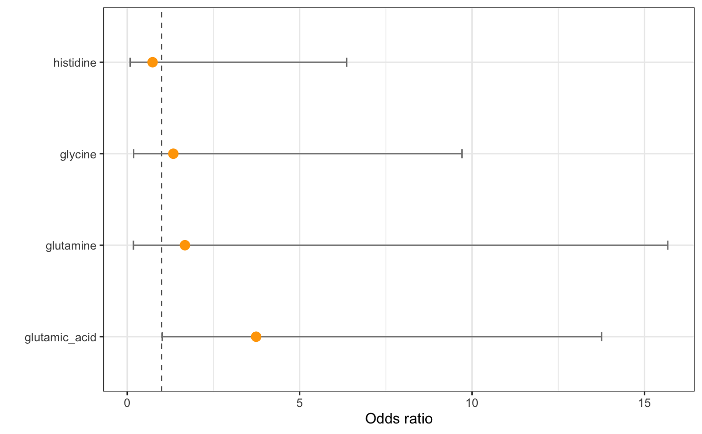

PomaOddsRatio() calculates the Odds Ratios for each feature from a logistic regression model using the binary outcome (group/type must be a binary factor) as a dependent variable.
PomaOddsRatio(data, feature_name = NULL, covariates = FALSE, showCI = TRUE)
| data | A MSnSet object. First |
|---|---|
| feature_name | A vector with the name/s of feature/s that will be used to fit the model. If it's NULL (default), all variables will be included in the model. |
| covariates | Logical that indicates if covariates will be included in logistic regression model. Default is |
| showCI | Logical that indicates if the 95% confidence intervals will be plotted. Default is |
A data frame with the Odds Ratios for all features with their 95% confidence intervals and a ggplot2 object.
library(POMA) data("st000336") st000336 %>% PomaImpute() %>% PomaNorm() %>% PomaOddsRatio(feature_name = c("glutamic_acid", "glutamine", "glycine", "histidine"))#> Warning: method argument is empty! KNN will be used#> Warning: method argument is empty! log_pareto will be used#> $OddsRatioTable #> feature OddsRatio CILow CIHigh #> 1 glutamic_acid 3.7383663 1.01585929 13.757203 #> 2 glutamine 1.6734229 0.17863948 15.675953 #> 3 glycine 1.3362850 0.18392699 9.708513 #> 4 histidine 0.7351024 0.08493044 6.362566 #> #> $OddsRatioPlot#>